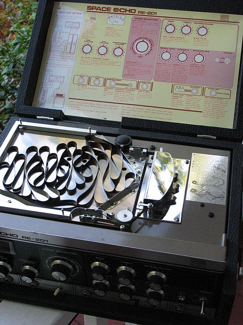

The Roland Space Echo is a line of tape delay units introduced by Roland Corporation in 1974. Whereas prior tape delay effects used tape reels, the Space Echo uses a free-running tape transport system. This reduces tape wear, noise, and wow and flutter, and made the units more reliable and easy to transport. Some units also feature spring reverb and chorus effects. Space Echo units have been used in genres such as reggae, dub, and stoner rock . In 2007, the Roland subsidiary Boss began producing Space Echo pedals that recreate the sounds of the original units.
Introduction
Production
In 1960, the Japanese engineer Ikutaro Kakehashi founded Ace Electronic Industries. He began selling tape delay devices, such as the Ace Tone EC-1 Echo Chamber, in the late 1960s.[1] In 1972, Kakehashi founded Roland Corporation. In 1973, Roland released the RE-100 and RE-200 tape delay units, which used a short 1/4" tape loop.[1] In 1974, Roland released the first Space Echo units in two models: the RE-101 and the RE-201, which also included spring reverb.[1] Instead of the tape reel used in previous tape echo units, the Space Echo uses a free-running tape transport system. The tape spools freely within a chamber, using a capstan drive protected by a plastic cover. This reduces tape wear, noise, and wow and flutter.[1] The RE-101 and RE-201 were followed by the RE-150, which had two playback heads and different controls. In 1977, Roland released the RE-301 Chorus Echo, which features a chorus effect, followed in 1980 by the rackmount RE-501 and RE-555 units. The digital RE-3 and RE-5 units were released in 1988. The RE-201 Space Echo remained in production until 1990.[2] In 2007, the Roland subsidiary Boss released the RE-20 pedal, with digital modelling of the original Space Echo sound. It includes a "twist" feature that increases the feedback and speed of the delay, creating a "swirling cacophony" effect. In 2023, Boss released an updated pedal, the RE-202, alongside the smaller RE-2.
|
Features The original Space Echo units contain a single recording head and three playback heads. The combination of tape heads is controlled with a rotary knob. Users may adjust the bass and treble levels on the output sound, the number of echo repeats, the length of each echo, and the ratio of the echo and reverb sounds. The Space Echo has two microphone inputs, one instrument input, and one input for a mixer or PA. The character of the delay sound changes as the tape wears with use. This leads to an incredibly dynamic and unique tapering of the signal, leading to a very deep and natural feeling echo. Michael Dregni of Vintage Guitar described the Space Echo sound as "warm, rich and organic". In Sound on Sound, Paul White wrote that "the term 'musical' is often over-used, but it really did apply to the RE-201, in that the echoes were warm and didn't get in the way of the original sound". Legacy The Space Echo was a commercial success. The first units were more reliable and sturdy than previous tape echo devices, making them easy to travel and perform with. They were used by musicians in genres such as reggae, dub, as well as stoner and drone metal. The Japanese band Boris uses the Space Echo to increase sustain and to create seas of sound, and the Jamaican reggae musician Bob Marley used it to create "deep, throbbing" echoes. The Jamaican reggae producer Lee "Scratch" Perry used it extensively in the 1970s. The English alternative rock bands Radiohead and Portishead used the Space Echo's tape speed controls to create pitch-shifting effects. In later years, solid-state delay effects became popular for their reliability and more faithful reproduction of sound. However, tape delay effects such as the Space Echo remained popular for the way the tape compresses and distorts, "creating the impression that the echoes are receding rather than just getting quieter". |
 |